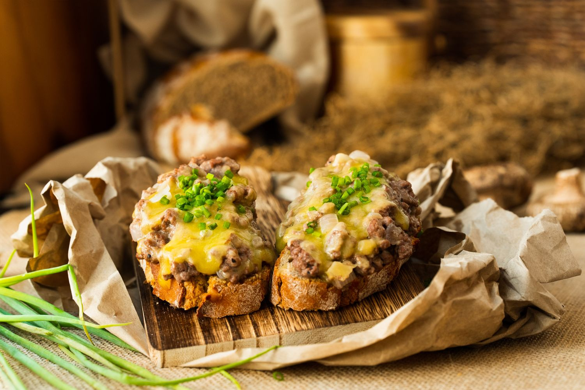

Ironforge Rations
Needed Mats
Directions
- 2 tablespoons butter
- 2 to 3 shallots, thinkly sliced
- Pinch of salt
- One 15-ounce can of haggis
- 1 tablespoon flour
- One 12-ounce beer
- 4 to 6 slices rustic bread, toasted
- 1 cup shredded cheddar cheese
- Salt and pepper, optional
- Melt the butter in a frying pan over medium heat. Add the shallots and cook until they are soft and translucent. Add the salt and the haggis, breaking it up and spreading it around the pan until it
is heated through. Work in the flour until it has been absorbed, then chase with around a third of the beer. The mixture should start forming into a sort of thick gravy. Depending on your preferences for consistency,
add a little more of the beer for a looser texture.
- Divide the haggis evenly between your slices of bread, top with cheddar cheese, and place under the broiler until the cheese has melted. Top with a pinch of salt and pepper to garnish, and enjoy!

Contact Me
ian.mcgowan@umconnect.umt.edu
Background Image by rawpixel.com on Freepik. Photo of rations found here.